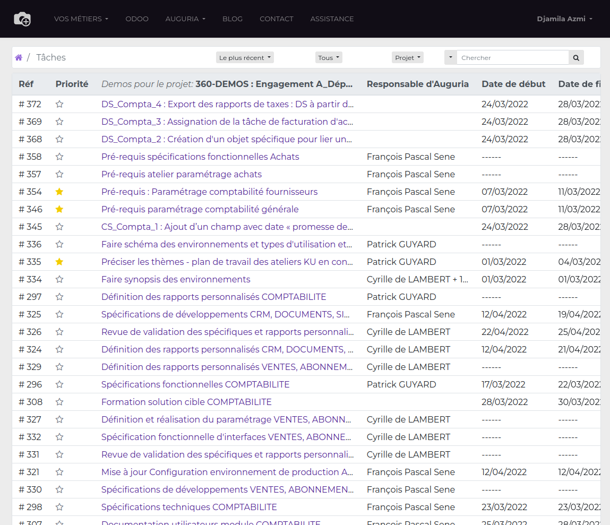
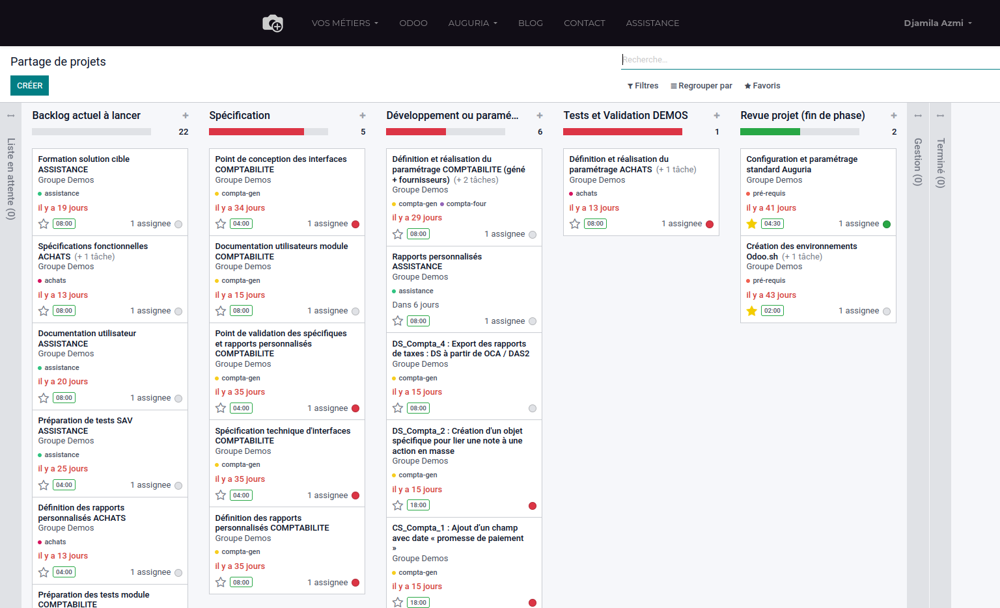
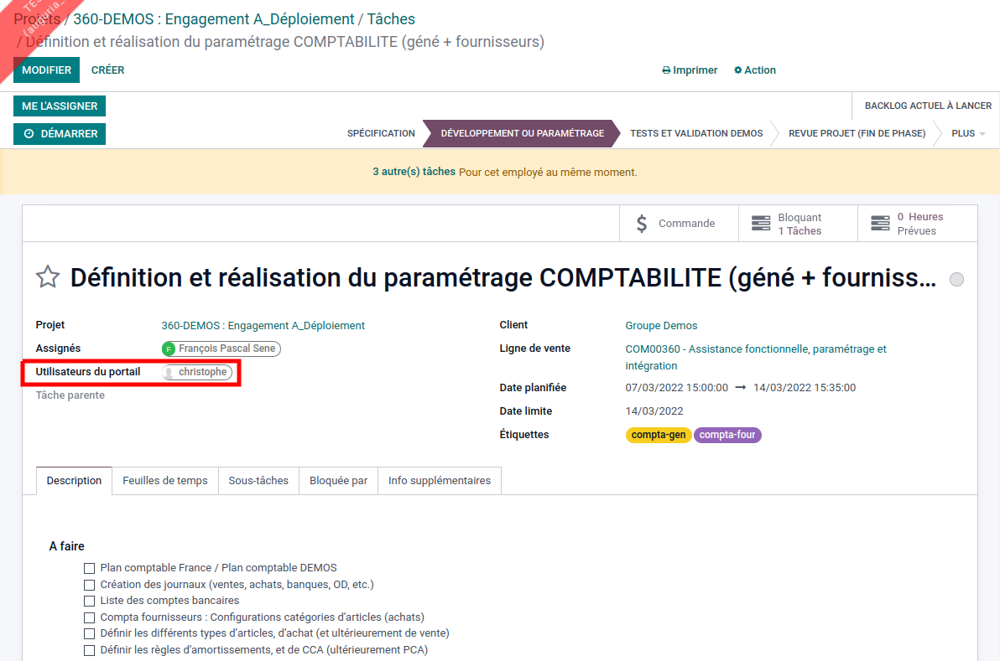
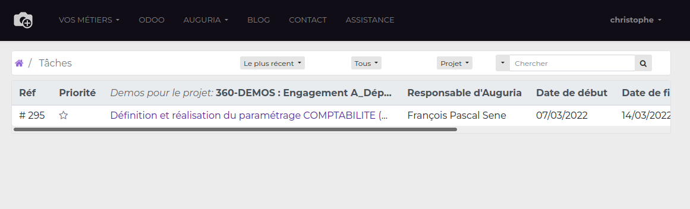
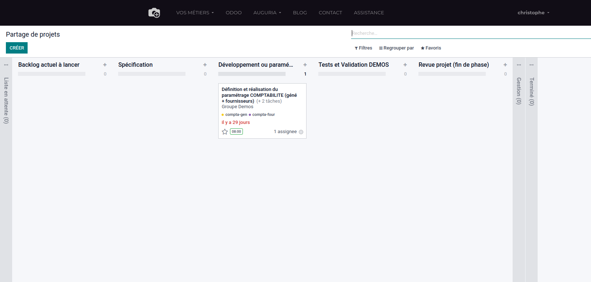

Le module change le comportement natif d'odoo quand un projet est partagé avec un utilisateur portail.
Si on sélectionne un utilisateur portail au niveau du projet puis on partage le projet avec cette personne:
l'utilisateur portail peut voir le projet et tous les tâches que dans la vue tableau
l'utilisateur portail peut voir le projet et tous les tâches dans la vue tableau et kanban, dans ce cas l'utilisateur ne peut changer que l'etape et le statut des tâches
Si on sélectionne un utilisateur portail uniquement au niveau d'une tâche puis on partage le projet avec cette personne
l'utilisateur portail peut voir uniquement ces tâches dans la vue tableau
l'utilusateur portail peut voir uniquement ces tâches dans la vue tableau et kanban, dans ce cas l'utilisateur ne peut changer que l'étape et le statut de ces tâches
